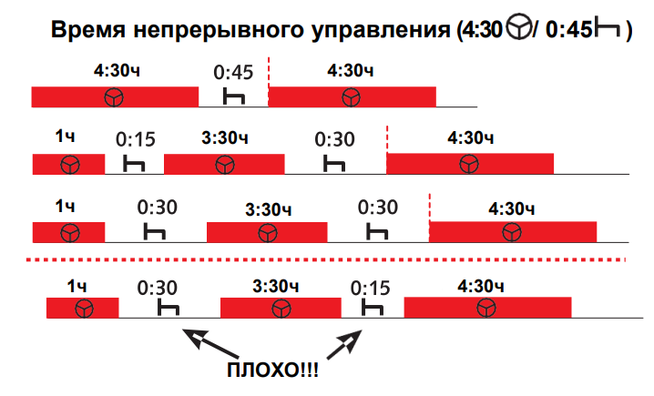

Максимальное время непрерывного управления транспортным средством составляет 4:30 (четыре с половиной часа), после чего необходисо сделать паузу 45 минут
45 минутный перерыв можно разделить на 2 перерыва. Первый перерыв должен быть не менее 15 минут, а второй не менее 30 минут.
Во время перерыва нельзя производить манипуляции с тахографом (менять страну, открывать и закрывать смену).
